// потребителска документация · снимките са с зачертена фирма и потребител
$ ytbuch --help
Ръководство на потребителя — фирми, сметкоплан, фактури, склад, счетоводство, банки, SAF-T и потребители. Работно ръководство, а не описание на кода.
1. Запознаване
Тази глава покрива първите минути с програмата: вход, разположение на екрана, таблото и работата с фирмите.
Вход
Отворете адреса на програмата. Появява се екранът за вход:
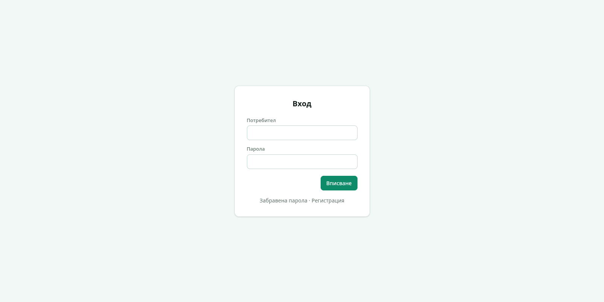
- Въведете Потребител (потребителско име или имейл).
- Въведете Парола.
- Натиснете Вписване.
Ако сте забравили паролата, ползвайте връзката Забравена парола — писмо за възстановяване се изпраща на имейла на акаунта (работи при зададени пощенски настройки от администратора). Връзката Регистрация създава нов акаунт с нова фирма.
Няколко неща за сигурността:
- Паролите се пазят солени и хеширани (argon2id).
- Акаунтът може да има двуфакторна автентикация — включва се от „Моят профил" (вижте Потребители и администриране).
- След няколко неуспешни опита входът се забавя за кратко срещу автоматични атаки.
Разположение на екрана
След влизане виждате основния екран:
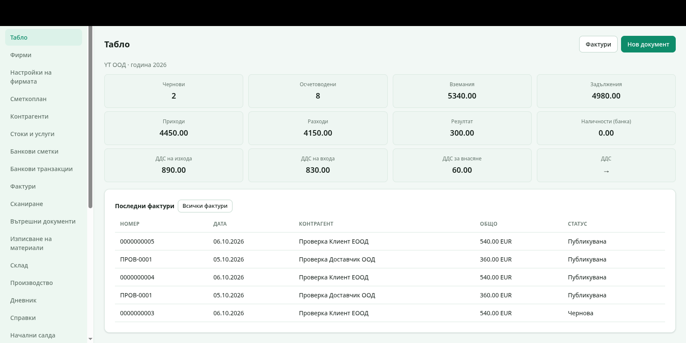
- Странично меню (вляво) — всички секции на програмата: Табло, Фирми, Настройки на фирмата, Сметкоплан, Контрагенти, Стоки и услуги, Банкови сметки, Банкови транзакции, Фактури, Сканиране, Вътрешни документи, Изписване на материали, Склад, Производство, Дневник, Справки, Начални салда, Периоди, ДДС, Дивиденти, Валутни курсове, SAF-T, Кореспонденции, Номенклатури, ДМА, Глобални настройки, Моят профил, Потребители, Роли и права. Секциите зависят и от вашите права — без право за дадена секция тя не се показва.
- Горна лента (горе) — превключвател на активната фирма с нейния ЕИК, бутони за език (BG/EN), тема (светла/тъмна), връзка към профила ви и Изход.
- Основна част (дясно) — съдържанието на избраната секция.
Смяна на език и тема
- Бутон EN / BG в горния десен ъгъл превключва езика на целия интерфейс. Изборът се запомня за следващите влизания.
- Бутонът с луната/слънцето превключва между светла (мента) и тъмна тема.
Табло
Таблото е началната страница — бърз поглед към състоянието на активната фирма:
Картите горе показват:
- Чернови — непубликувани документи;
- Осчетоводени — публикувани документи;
- Вземания — какво ви дължат клиентите;
- Задължения — какво дължите на доставчиците;
- Приходи и Разходи за периода;
- Резултат — приходи минус разходи;
- ДДС — начислен данък за периода.
Под картите е списъкът Последни фактури с най-новите документи — кликнете ред, за да отворите документа.
Фирми
Секция „Фирми" показва всички фирми, до които имате достъп:
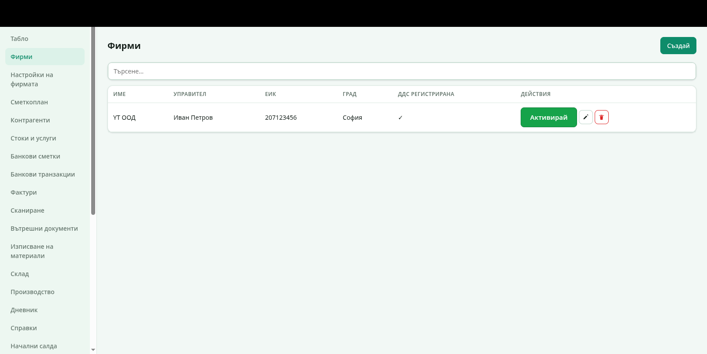
- Нова фирма — създава фирма с име, ЕИК, ДДС номер, адрес и МОЛ.
- Превключване — изберете фирма от падащото меню „Активна фирма" в горната лента. Всички екрани следват активната фирма.
- Редакция и изтриване — действията вдясно на всеки ред.
Демо инсталацията идва с фирма YT ООД (ЕИК 207123456) с примерни фактури и счетоводни записи — удобно за преглед, преди да въведете реалните си данни.
Първи стъпки с нова фирма
- Създайте фирмата от „Фирми".
- Отворете Настройки на фирмата и попълнете данните — вижте Фирма и сметкоплан.
- Заредете сметкоплана с бутона за seed от НАП.
- Добавете контрагенти и стоки, след което издайте първата фактура — Фактури.
Навигация с клавиатура и навици
- Enter изпраща повечето форми; Esc затваря диалоговите прозорци.
- След създаване на запис програмата ви връща към списъка или към създадения документ.
- Дати се попълват като
13.10.2026или чрез календера до полето.
Следваща глава: Фирма и сметкоплан.
2. Фирма и сметкоплан
Настройките на фирмата определят как изглеждат документите ѝ, къде отиват счетоводните записи и как се номерират документите. Всичко се намира в Настройки на фирмата в страничното меню.
Табове на настройките
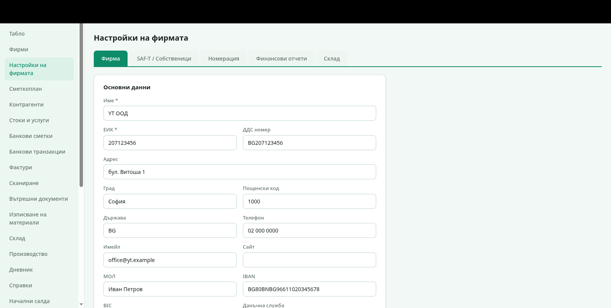
Страницата има шест таба:
- Фирма — основни данни, управител, счетоводител, ДДС настройки;
- SAF-T / Собственици — обекти, действителни собственици, крайни майки (данни, които НАП иска в SAF-T файла);
- Номерация — серии документи и следващите номера;
- Финансови отчети — настройки за отчетите;
- Склад — правила за складовото счетоводство (сметки и методи);
- Потребители — кои потребители имат достъп до фирмата и с каква роля (за администратор на фирмата).
Таб „Фирма"
- Основни данни — име, ЕИК, ДДС номер, адрес, град, пощенски код, държава, телефон, имейл, сайт, МОЛ, IBAN и BIC, данъчна служба и офис на НАП. Тези данни се отпечатват върху фактурите като доставчик.
- Управител и счетоводител — имена и ЕГН на управителя, счетоводителя и пълномощника (за протоколи и декларации).
- ДДС и фискален период — дали фирмата е ДДС регистрирана, ДДС периодът (месечен или тримесечен), валутата на счетоводството, поделение (клон) и началният месец на фискалната година.
- Интеграции — API ключове за изкуствен интелект при сканиране на фактури (по фирма).
Промените се записват с бутона Запази данните долу.
Таб „SAF-T / Собственици"
- Обекти — седалище, складове и клонове на фирмата. Обектът се избира при всеки документ и определя в кой склад влиза/излиза стоката.
- Действителни собственици и крайни майки — физически лица и чуждестепенни майки; излизат в SAF-T файла.
Таб „Номерация"
Всяка серия документи има име, префикс и следващ номер. Програмата предлага автоматичен номер при нов изходящ документ (полето „Номер" в новата фактура). Можете да въведете и свой номер — тогава автоматичното номериране продължава от по-голямото от двете.
Таб „Склад"
Правилата казват по коя сметка се отразява покупката, продажбата и изписването на стоки. Ако правилото липсва, складовите справки дават предупреждение вместо запис.
Сметкоплан
Секция Сметкоплан показва сметките на активната фирма:
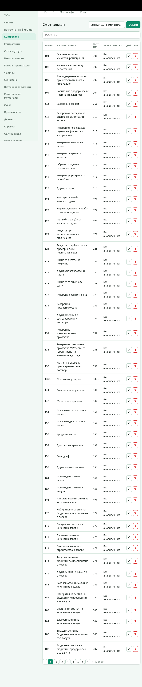
- Seed от НАП — зарежда стандартния национален сметкоплан. Може да се използва повторно: съществуващите номера не се дублират.
- Нова сметка — създава сметка с номер, име, тип и помощна информация. Пълният номер се образува от номер + няколко нива — синтетични и аналитични сметки по българската практика.
- Редакция — променя името и атрибутите на сметката.
Сметките с начало на номера от съответния клас (4xx клиенти, 5xx доставчици, 7xx приходи, 6xx разходи) се ползват автоматично от документите — вижте главите за фактури и склад.
Списъкът странира по 50 сметки с бутони под таблицата, а търсачката обхваща всички сметки, не само текущата страница.
Следваща глава: Фактури.
3. Фактури
Фактури са сърцето на програмата. Една фактура минава през три състояния: чернова → публикувана → при нужда сторно. Публикуването прави счетоводния запис в дневника.
Списъкът с фактури
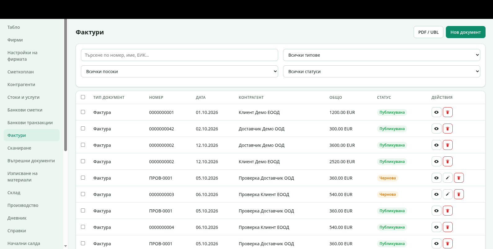
- Търсене — по номер, име на контрагент или ЕИК.
- Филтри — по тип документ и по статус (чернова / публикувана).
- Нов документ — отваря формата за нова фактура (по-долу).
- Действия вдясно — преглед (икона с око), редакция (молив — само за чернови) и изтриване.
Статусът е цветен: зелено Публикувана и оранжево Чернова.
Създаване на нов документ
От „Фактури" → Нов документ:
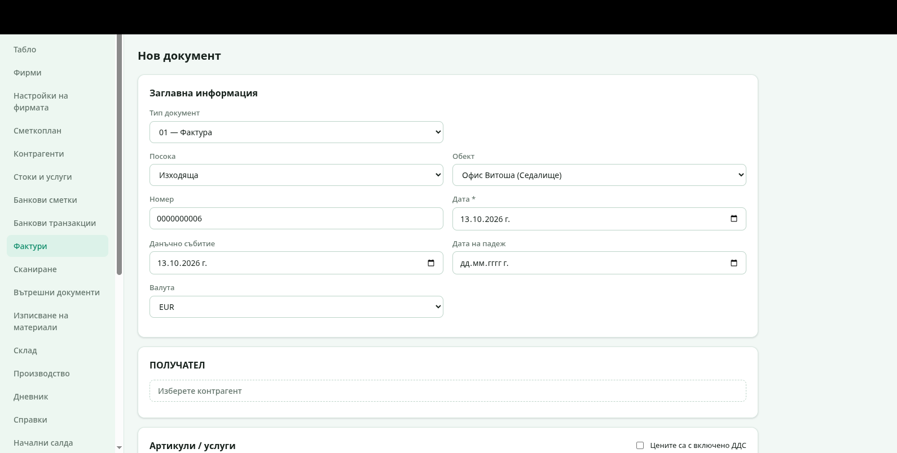
Заглавна информация
- Тип документ — 01 Фактура (стандартната), 02 Дебитно известно, 03 Кредитно известно, Проформа (не е данъчен документ), протоколи и специалните типове по ЗДДС. Типът определя как се отразява данъкът.
- Посока — Изходяща (продажба, ваша фактура) или Входяща (покупка, фактура на доставчик).
- Обект — седалището или складът, към който е документът. При входящи фактури обектът определя в кой склад влиза стоката; при изходящи — от кой склад излиза.
- Номер — за изходящи документи програмата предлага следващия свободен номер автоматично; можете да го смените.
- Дата и Данъчно събитие — датата на документа и датата на данъчното събитие (обикновено съвпадат).
- Дата на падеж — когато плащането е със срок.
- Валута — EUR, BGN, USD и други; счетоводният запис е в евро по курса на ЕЦБ за датата.
Получател
Натиснете Изберете контрагент и изберете от списъка, или създайте нов директно от диалога. Ако контрагентът е с български ЕИК и ДДС номер, програмата проверява номера в VIES и попълва адреса автоматично.
Артикули / услуги
Всеки ред има:
- Стока / услуга — избира се от „Стоки и услуги" или се описва свободно (свободното описание се запомня за следващия път). Нов артикул се създава и директно от документа — със същата пълна форма като в „Стоки и услуги" (КН8, вид запас, сметки, автоматично изписване);
- К-во и Мерна единица — бр., кг, м, ч и още над сто единици от номенклатурата на НАП;
- Ед. цена без ДДС и ДДС % — 20%, 9% или 0%;
- полето „Цените са с включено ДДС" превръща въведените цени в такива с данък и обратно.
Редове се добавят с + Добави ред и се махат с ✕.
Плащане и тотали
- Начин на плащане — банков превод, в брой, карта, компенсация, друго;
- Отстъпка % — намалява данъчната основа;
- Бележки — свободен текст, отпечатва се върху документа.
Долу се пресмятат живо: сума без отстъпка, отстъпка, данъчна основа, ДДС и Общо за плащане.
Запазете с Запази — документът остава чернова и може да се редактира.
Преглед и публикуване
Отворете документа от списъка:
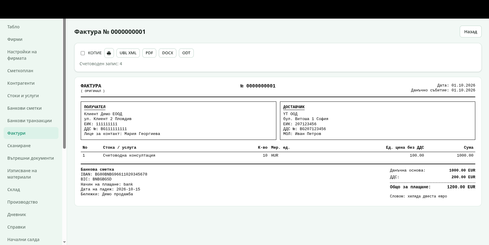
Вижда се пълната фактура: получател и доставчик, редовете, тоталите (подравнени вдясно), сумата словом, банковата сметка за плащане и бележките. Ако документът е публикуван, горе пише номерът на счетоводния запис (връзка към дневника).
- Публикуване — прави счетоводния запис и сменя статуса на „Публикувана". От този момент документът не се редактира. Не може да се публикува документ в затворен период.
- КОПИЕ — поставя надпис „копие" при печат.
- Печат (иконата с принтера) — отваря системния печат с бланката; същият като PDF експорта.
- PDF / DOCX / ODT — изтеглят документа във формат по избор; PDF е с вграден шрифт и се отваря еднакво навсякъде. Мерните единици на бланката са с български съкращения (бр., кг, л и др.).
- UBL XML — електронният формат на фактурата (EN 16931) за обмен с партньори, които го изискват.
Черно сторно
Грешна публикация се коригира със сторно: програмата създава огледален документ със същите редове и отрицателни суми — дебитът и кредитът не се разменят. Сторното се публикува като обикновен документ и нулира ефекта на оригинала, след което издавате правилния документ.
Чуждестранни доставки: извън ДДС дневник, чл. 117 и митница
При покупка от ЕС или трети страни фактурата на чуждия доставчик не е български данъчен документ. Отметката „Не влиза в ДДС дневника (чуждестранна доставка от ЕС / трети страни)" я осчетоводява като реална доставка (склад / разход и задължение по сметка 401), но я държи извън ДДС дневниците; документът носи белег „Извън ДДС дневник".
ДДС се отразява със специален документ от бутоните на фактурата:
- Издай протокол по чл. 117 от ЗДДС — за ВОП и услуги от ЕС. Протоколът влиза едновременно в дневника за покупки и в дневника за продажби (данъкът се начислява и се приспада);
- Издай митническа декларация (код 07) — за внос от трети страни. Попълват се номерът на митническата декларация (MRN), статистическата стойност, митото и начисленото ДДС при внос. Вместо доставчик се кредитира сметка 458 „Разчети с митници", а в дневника за покупки влизат основата (статистическа стойност + мито) и митническото ДДС.
Сканиране на фактура
Секция Сканиране превръща качена снимка или PDF на получена фактура в чернова:
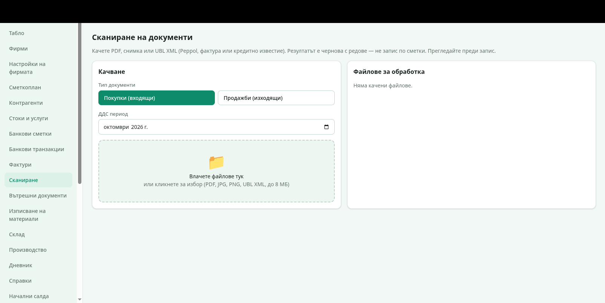
- Качете файла (PDF, JPG, PNG). - По подразбиране се сканира само първата страница на PDF документа, за да се избегнат дублирани копия на втора страница, гаранционни карти или приемо-предавателни протоколи. - Ако самата фактура е многостранична, маркирайте „Многостранична фактура (всички страници)" преди сканиране — изкуственият интелект ще събере редовете от всички страници на фактурата и ще игнорира приложените гаранционни карти и протоколи.
- Изкуственият интелект разчита контрагента, датата, номерата, редовете и сумите. - За фирми, нерегистрирани по ЗДДС (или без въведен ДДС номер в настройките на фирмата): при сканиране на входяща фактура с 20% ДДС данъкът автоматично се разпределя в стойността на артикулите (0% ДДС) по точните брутни суми от документа, без да се получава разлика от закръгляне. В прегледа на черновата има и бутон „Включи ДДС в цената на артикулите (0% ДДС)", както и възможност за директна корекция на сумата на всеки ред.
- Проверете разчетеното и запазете — документът се появява като чернова входяща фактура.
Сканирането изисква API ключ за Mistral AI, настроен в „Настройки на фирмата" → „Интеграции". Ключът е по фирма; данните се обработват от европейски оператор.
UBL вход
Като алтернатива на сканирането може да качите директно UBL XML файл — програмата го разбира и създава чернова с данните от него, без разпознаване по картинка.
Следваща глава: Стоки и склад.
4. Стоки и склад
Складовият модул следи количествата по обекти: стоката влиза с входящите фактури, излиза с изходящите, а вътрешните документи я местят между обектите.
Контрагенти
Секция Контрагенти пази клиентите и доставчиците — име, ЕИК, ДДС
номер, адрес и контакти. При български ДДС номер програмата проверява
регистрацията в VIES и разчленява адреса на улица, номер, град и
пощенски код. ЕИК и ДДС номерът трябва да са уникални — дубликат не се
допуска. За еднократни или неизвестни контрагенти ЕИК 999999999
може да се повтаря.
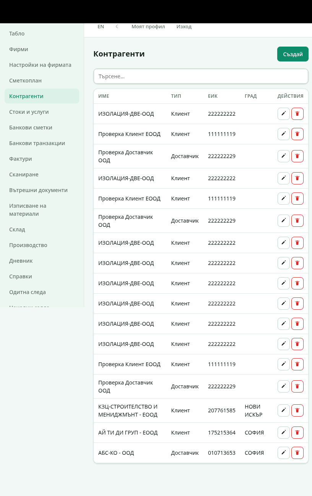
Контрагентите се избират в документите; нов може да се създава и директно от самата фактура.
Стоки и услуги
Секция Стоки и услуги е номенклатурата на артикулите:
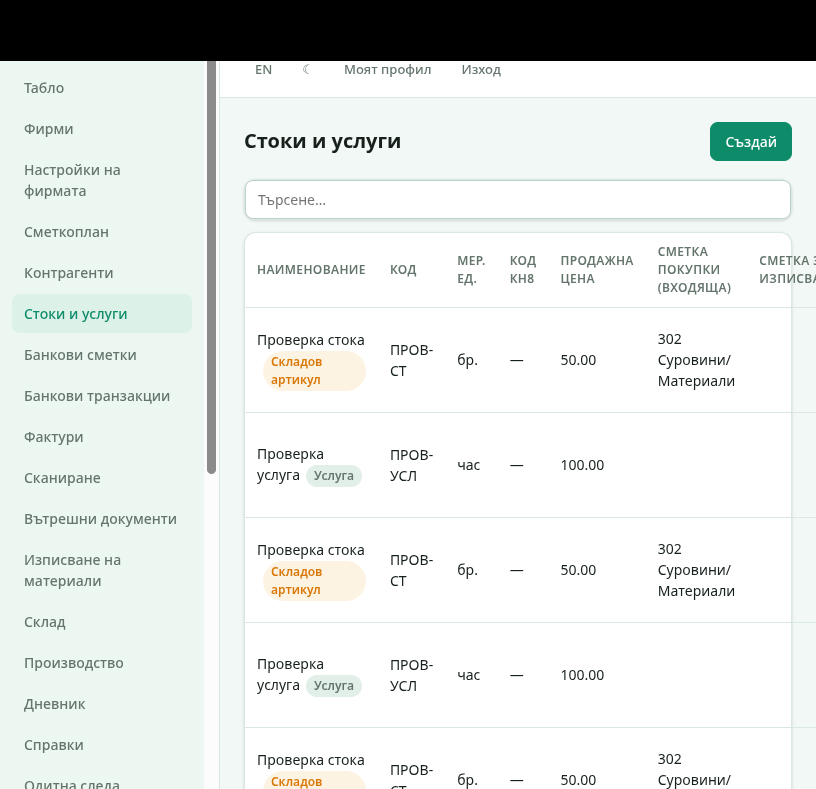
Всеки артикул има:
- Наименование и тип — услуга или складов артикул;
- Код — ваш собствен код (напр.
SRV-1,st01); оставен празен, програмата генерира автоматичен номер; - Вид материален запас — материали, продукция, стоки, незавършено производство или инвестиция в материален запас (за SAF-T);
- Код КН8 — класификация по Комбинираната номенклатура. Списъкът с
кодове се зарежда веднага при отваряне на формата, а търсачката над
него го стеснява по код или наименование. Бутонът „Намери КН8 и
мерна единица с AI" предлага код и мерна единица по името и
описанието на артикула. За услуги кодът е
00000000. Кодът излиза в SAF-T файла; - Мерна единица — от каталога на НАП;
- Продажна цена — предлага се автоматично в новите изходящи фактури;
- Сметка покупка и Сметка продажба — по кои сметки отива стоката в счетоводството (напр. 304 Стоки и 702 Приходи от продажби);
- Сметка за изписване — разходната сметка, по която отива стойността при изписване;
- Автоматично изписване при покупка — за незначителни материали: покупката прави Дт 302 / Кт 401 и веднага Дт сметката за изписване / Кт 302, без да остава складова наличност;
- Наличност — текущото количество (пресмята се от склада, вижте по-долу).
Бутонът Създай добавя нов артикул; моливът и кофата редактират и трият.
Как се движи стоката
- Входяща фактура с обект „Склад Младост" → стоката влиза в този обект.
- Вътрешен документ (трансфер) → мести стоката между два обекта.
- Изходяща фактура → стоката излиза от обекта на документа.
- Изписване на материали / производство → материалите се изписват за нуждите на фирмата или се превръщат в продукция.
Вътрешни документи
Секция Вътрешни документи описва придвижването между обектите:
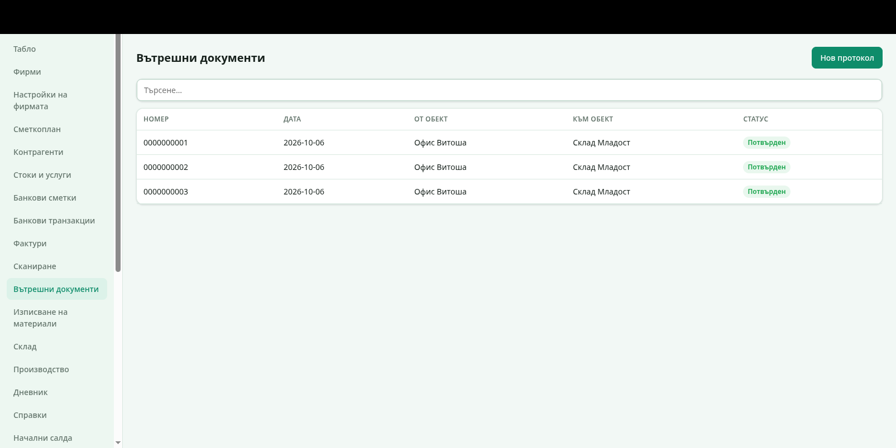
Новият документ избира от обект и към обект, добавя редове с артикули и количества, и се потвърждава. След потвърждаване количеството намалява в първия обект и расте във втория; документът има печатна бланка като фактурите.
Изписване на материали
Секция Изписване на материали е за ръчно изписване — брак, производствени нужди, служебна употреба. Документът избира обект и артикули с количества; при потвърждение количествата намаляват, а стойността отива по правилата от „Настройки на фирмата" → таб „Склад".
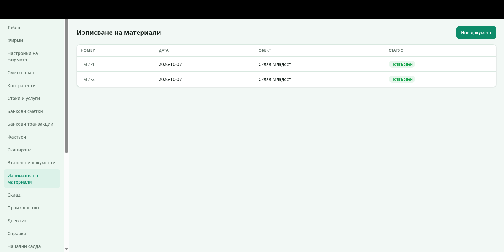
Склад
Секция Склад е централната складова справка:
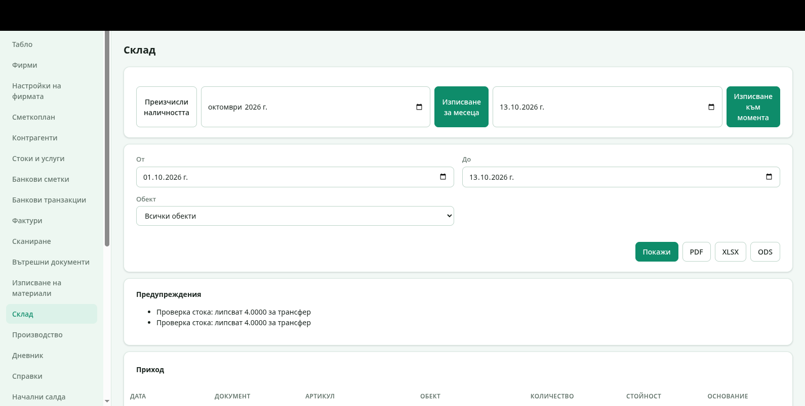
Горният панел управлява изчислението:
- Преизчисли наличността — пресмята всички количества отначало по документите;
- Изписване за месеца (избира се месец) — месечно изписване на продадените стоки;
- Изписване към момента (избира се дата) — изписване на всичко продадено до датата.
Долу е самата справка с филтри От, До и Обект. Бутонът Покажи я рисува на екрана, а PDF / XLSX / ODS я изтеглят като файл. Таблиците показват прихода и разхода на стоки по обекти с количествата, стойностите и основанията (кой документ е мръднал стоката).
Карта „Предупреждения" събира проблемите — например липсващо правило за сметка или отрицателна наличност при трансфер. Отстранете причината и пресметнете отново.
Производство
Секция Производство превръща материали в готова продукция:
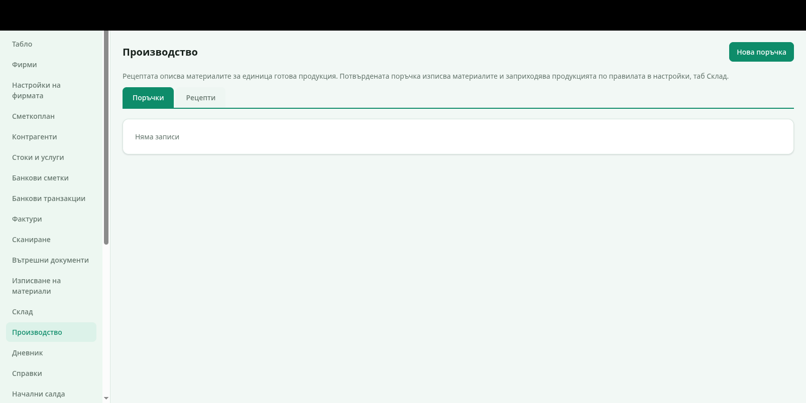
Има два таба:
- Рецепти — описват материалите за единица готова продукция (рецептурна карта);
- Поръчки — производствени поръчки. Потвърдената поръчка изписва материалите по рецептата и заприходява готовата продукция — по сметките от „Настройки на фирмата" → таб „Склад".
Бутонът Нова поръчка създава поръчка за избран продукт и количество; производственият протокол се отпечатва като документ.
Следваща глава: Счетоводство.
5. Счетоводство
Тази глава обхваща дневника, справките, периодите, ДДС декларацията, банките и останалите счетоводни модули.
Счетоводен дневник
Дневникът пази всички счетоводни записи. Запис идва автоматично при публикуване на фактура, изписване от склада или производствена поръчка, а може да се въведе и ръчно с бутона Нов запис.
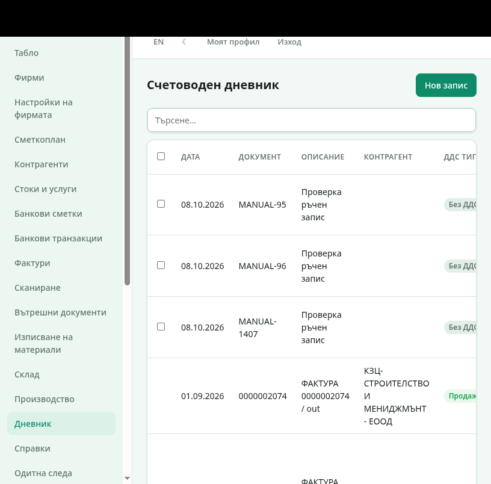
Колоните показват датата, номера на документа, описанието, контрагента и дали записът е с ДДС тип покупки (оранжево), продажби (зелено) или без ДДС (сиво). Модалът за нов/редактиран запис съдържа датата, описанието и редовете със сметка, дебит или кредит и количество — сумата на дебита трябва да е равна на кредита. За валутни сметки (групи 4xx/5xx) редът приема и валута и курс; сумата се смята като количество × курс (за основната валута курсът е 1). Бутонът „Курс от ЕЦБ“ попълва курса към датата на записа.
Записите, направени от документи, се трият и пресъздават при промяна на документа. Ръчните записи имат собствено описание и се редактират от дневника. Те имат и отметки за избор — Избери всички ръчни записи маркира всички, а Изтрий ги изтрива групово след потвърждение. Груповото триене не засяга записи от документи.
Справки
Секция Справки предлага стандартните счетоводни отчети:
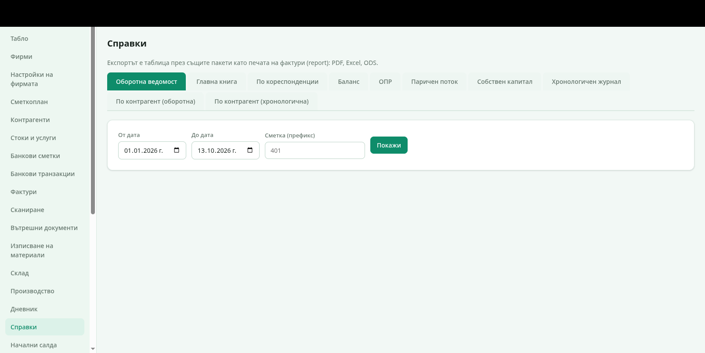
Отчети с табове горе:
- Оборотна ведомост — оборот и салдо по сметки;
- Главна книга — движения по избран(и) сметка(и);
- По кореспонденции — двойки дебитна/кредитна сметка;
- Баланс, ОПР (отчет за приходите и разходите), Паричен поток, Собствен капитал — отчетите, които се пълнят от формулите на фирмата (настроени в „Настройки на фирмата" → таб „Финансови отчети");
- Хронологичен журнал — записите в реда на възникването;
- По контрагент (оборотна и хронологична) — разбивка по клиент или доставчик.
Филтрите са От дата, До дата и Сметка (префикс) — префиксът
401 взема всички аналитични към сметката. Покажи рисува справката
на екрана; PDF, XLSX и ODS изтеглят таблицата като файл.
В експорта има отметка „Български формат на числата (1 200,00)". Когато е включена, числата се форматират с интервал за хилядите и запетая за десетичните, както ги очаква български LibreOffice. Изключена, файловете са в международен формат с точка.
Начални салда
Секция Начални салда въвежда салдата в началото на фискалната година — по сметка, с дебит или кредит. Тези суми участват в справките, но не пишат в дневника. За да се въведат, януари трябва да е отворен период (вижте по-долу).
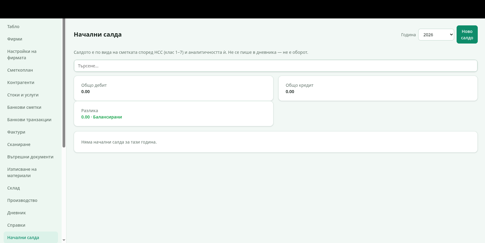
Периоди
Секция Периоди управлява дванадесетте месеца на годината:
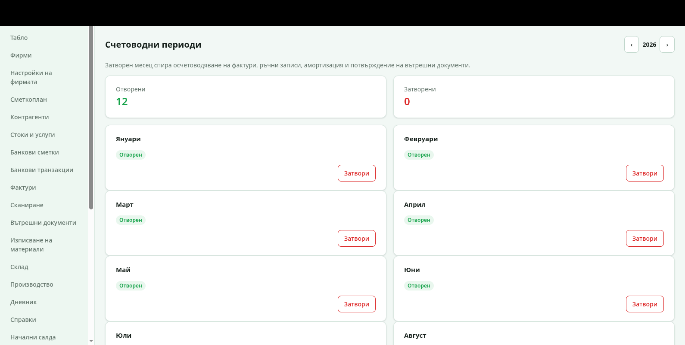
- Приключвателни операции — в края на месеца от страницата «Счетоводни
периоди» бутонът «Приключи» показва преглед и записва балансирана статия
(
CLOSE-YYYY-MM), която приключва салдата по зададената в настройките карта (таб «Приключване»: напр. група 60 → 611, а 602 → 612). Повторно приключване за същия месец не е позволено, докато статията не се изтрие от дневника. - Затваряне на месец — след приключване на месеца той се затваря: публикуване на документи с дата в него вече не е възможно.
- Отваряне — връща месеца за промяна, ако трябва да се коригира нещо.
- Липсващ ред се смята за отворен период.
Затварянето на месеца е вашата защита: приключената отчетност не може да се промени случайно.
ДДС дневници и декларация
Секция ДДС съставя данъчните дневници и файловете за НАП:
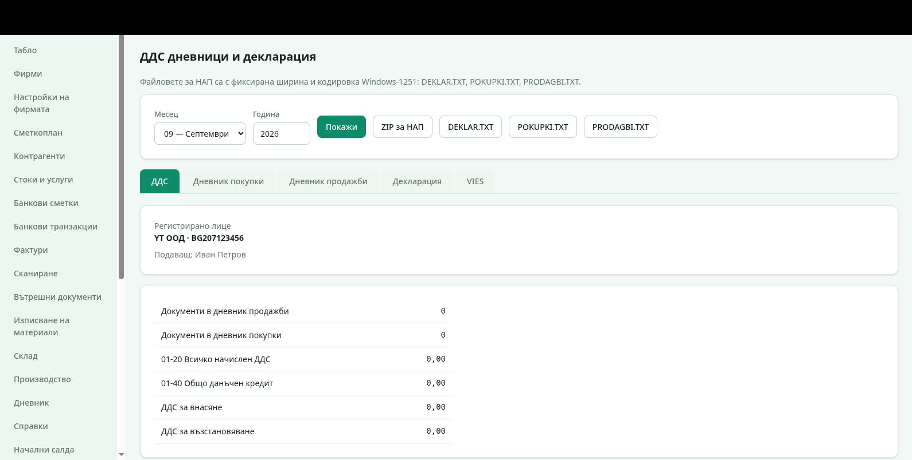
- Изберете Месец и Година и натиснете Покажи.
- Табовете показват Дневник покупки, Дневник продажби, Декларация и VIES проверка на контрагентите.
- Обобщението показва документите в двата дневника, начисления ДДС, данъчния кредит и ДДС за внасяне или възстановяване.
- Бутоните изтеглят файловете за НАП — DEKLAR.TXT (декларацията), POKUPKI.TXT и PRODAGBI.TXT (двата дневника) или всичко в ZIP за НАП. Файловете са с кодировка Windows-1251, готови за портала на НАП.
Данните се събират от публикуваните фактури за съответния ДДС период (месечен или тримесечен, както е настроен фирмата).
Банкови сметки и транзакции
Секция Банкови сметки пази IBAN и BIC на сметките на фирмата:
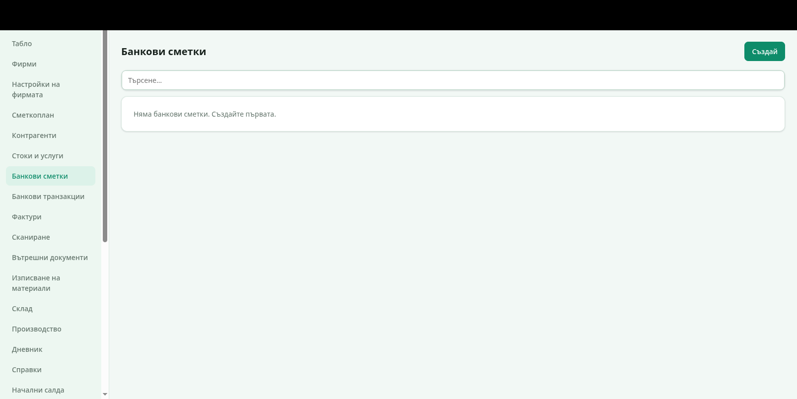
Секция Банкови транзакции приема извлечения:
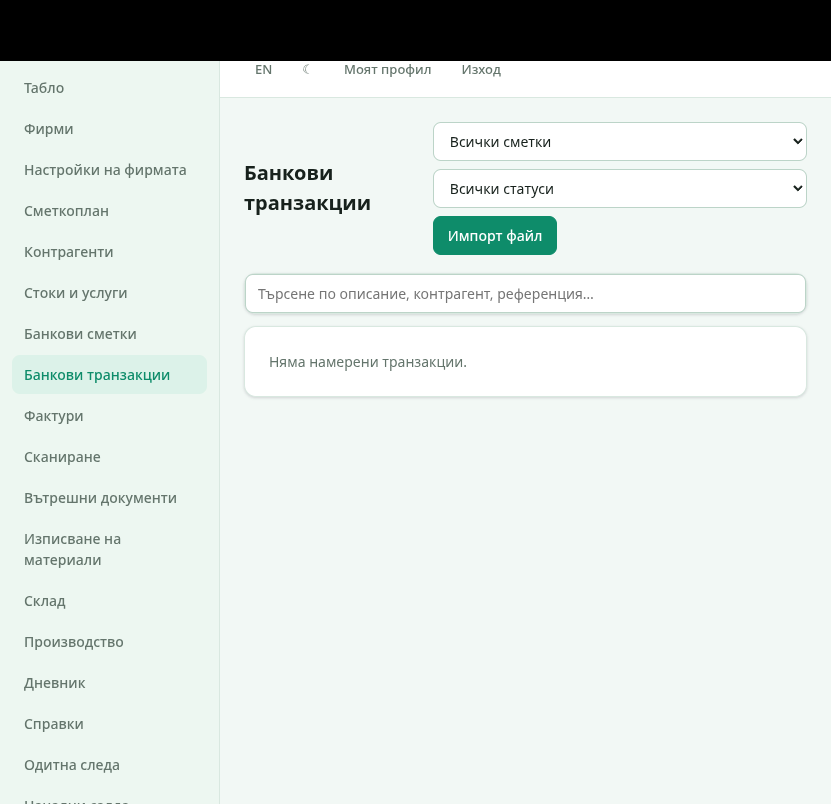
- Импорт на CSV, MT940 и XML (Postbank, UniCredit, OBB и стандартен ISO camt.053) — програмата разпознава формата автоматично;
- Всяка транзакция може да се осчетоводи — избира се сметка и контрагент и записът отива в дневника; разнасянето съпоставя транзакциите с фактури и ги затваря взаимно.
ДМА (дълготрайни активи)
Секция ДМА води дълготрайните активи: категории с гаранционен срок и активи с начална стойност. Програмата пресмята и записва месечната амортизация (Дт 603 / Кт 241) с един бутон. Поддържат се преоценка, местене между обекти, консервация и отписване.
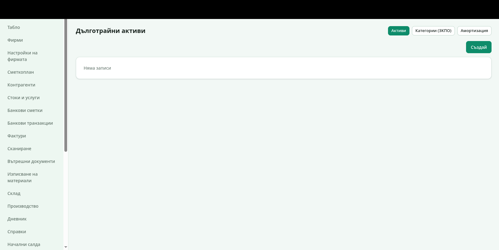
Дивиденти
Секция Дивиденти изчислява дивиденти към действителните собственици (от настройките на фирмата): размер на дивидента, удържан данък и протокол за изплащане.
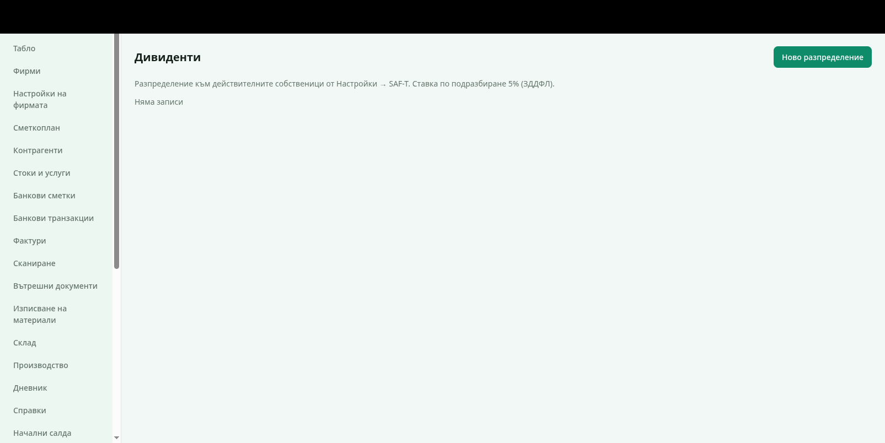
Валутни курсове
Секция Валутни курсове държи курсовете на ЕЦБ — за 1 EUR срещу всяка валута. Бутонът за импорт дръпва дневния или историческия набор директно от ЕЦБ; липсващ ден ползва най-близкия по-ранен курс.
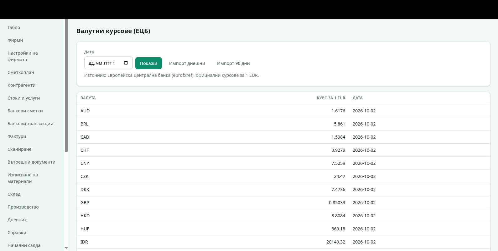
Курсовете се ползват автоматично при фактури и плащания във валута.
Следваща глава: SAF-T.
6. SAF-T
SAF-T (Standard Audit File for Taxation) е файловият формат за данен одит на НАП. ytbuch генерира SAF-T XML по схемата V1.0.1 и пази номенклатурите и съпоставянията, които файлът изисква.
Експорт на SAF-T
Секция SAF-T изготвя файла:
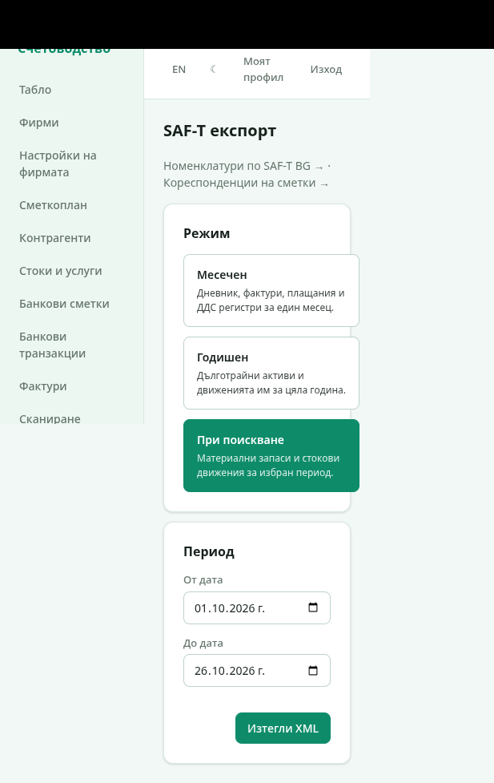
- Изберете режим — месечен, годишен или при поискване. Всеки режим има кратко описание какво включва;
- Задайте периода според режима: - Месечен — месец: дневник, фактури, плащания и ДДС регистри; - Годишен — година: дълготрайни активи и движенията им; - При поискване — дати От и До: материалните запаси и стоковите движения са само в този период. Началната наличност е към деня преди „От", крайната — към „До";
- Изтеглете XML файла.
Файлът съдържа регистрираното лице, обектите, собствениците, контрагентите, стоките, дневника с редовете и двата ДДС дневника за периода — всичко, което НАП изисква от одитния файл.
Пълна валидация срещу XSD схемата минава, когато периодът е „затворен" от данни: месец с банкови плащания, година с активи и склад с наличности. Работете с данните на фирмата и файлът ще е готов за подаване.
Номенклатури
Секция Номенклатури показва дванадесетте статични каталога на НАП:
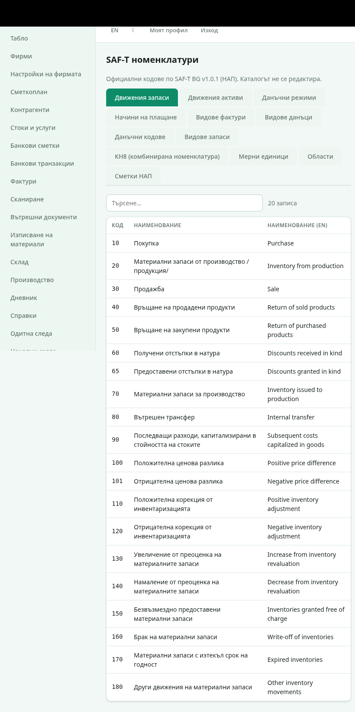
- сметки (сметкопланът на НАП — около 360 сметки);
- КН8 — Комбинираната номенклатура с кодове и наименования за стоките, с търсене по код или текст. Тя стои зад класификацията на артикулите (глава 4) и техния код в SAF-T файла;
- мерни единици (127);
- данъчни кодове (169);
- типове документи, държави, градове, валути, начини на плащане и други.
Каталогът е готов — той се ползва от всички документи (типове фактури, мерни единици, данъчни кодове) и не се редактира.
Кореспонденции
Секция Кореспонденции („Съпоставяне на SAF-T движения") казва на експорта как да се опишат определени движения: стокови (покупка/продажба/извод), активи и парични. Всеки ред съпоставя вид движение със стандартни дебитна и кредитна сметка. Програмата предлага стандартните двойки; можете да ги коригирате според практиката на фирмата.
Следваща глава: Потребители и администриране.
7. Потребители и администриране
Тази глава е за администраторите: потребители, роли и права, профил, двуфакторна автентикация, глобални настройки и архивиране.
Потребители
Секция Потребители показва всички акаунти:
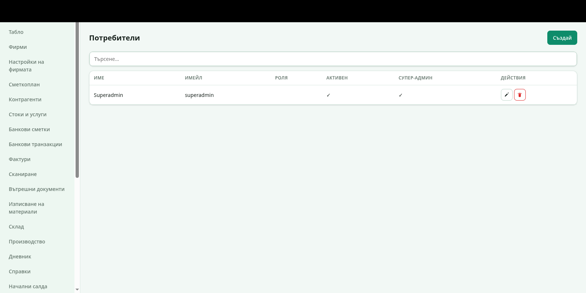
- Нов потребител — име за вход, имейл, парола (поне 8 знака) и роля;
- Редакция — смяна на ролята, имейла и данните;
- Изтриване — с две защити: собственият ви акаунт и последният супер администратор не могат да се трият.
Всеки потребител влиза със своето име и вижда само фирмите, до които име права.
Роли и права
Секция Роли и права дефинира какво може всяка роля:
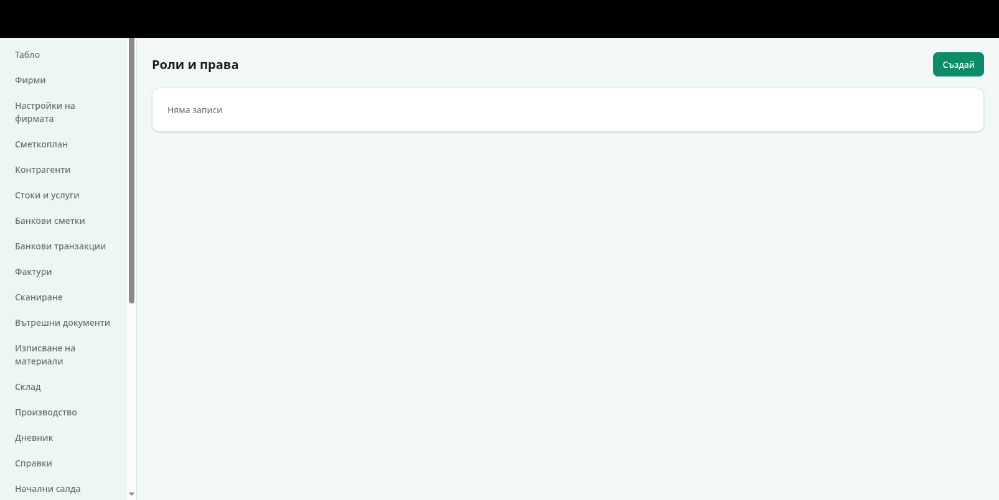
Правата са по секции на програмата — например фактури, склад,
дневник, ДДС, потребители, настройки. Роля с всички права има
*. Проверката е в самия сървър: потребител без право за секция
получава отказ, а мъртвите екрани не се показват в менюто му. Така
можете спокойно да дадете на счетоводителя само счетоводни права, а на
оператора — само фактури.
Супер администраторът минава без проверки и вижда всичко.
Одитна следа
Секция Одитна следа е журналът на промените: кой потребител и кога е съставил, редактирал, осчетоводил, върнал в чернова или изтрил фактура, вътрешен протокол, изписване на материали, производствена поръчка, дивидент или счетоводна статия.
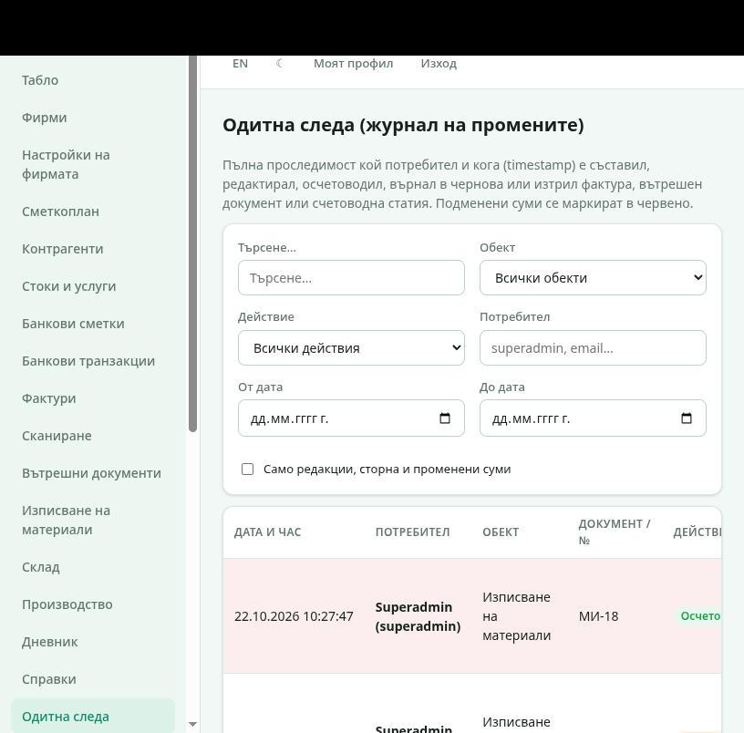
Филтрите по обект и действие стесняват списъка, а отметката „Само редакции, сторна и променени суми" скрива рутинните записи. Променените суми се маркират в червено. Всеки ред води към документа, а историята на обекта показва съдържанието му преди и след промяната.
Моят профил
Секция Моят профил е личният екран на всеки потребител:
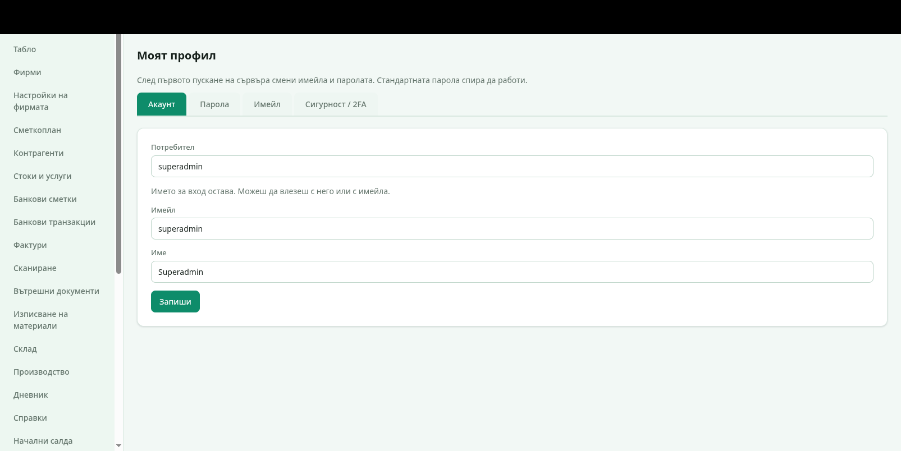
- Име — показваното име;
- Парола — смяна на паролата;
- Имейл — смяна на имейла (изисква паролата, защото хешът на паролата включва имейла);
- 2FA (двуфакторна автентикация) — включва се като сканирате QR кода с приложение като Google Authenticator или Aegis. При влизане се иска шестцифрен код от приложението. Резервните кодове се изтеглят като файл — пазете ги, те са единственият резервен вход при загубен телефон.
Глобални настройки (админ)
Секция Глобални настройки е само за супер администратори:
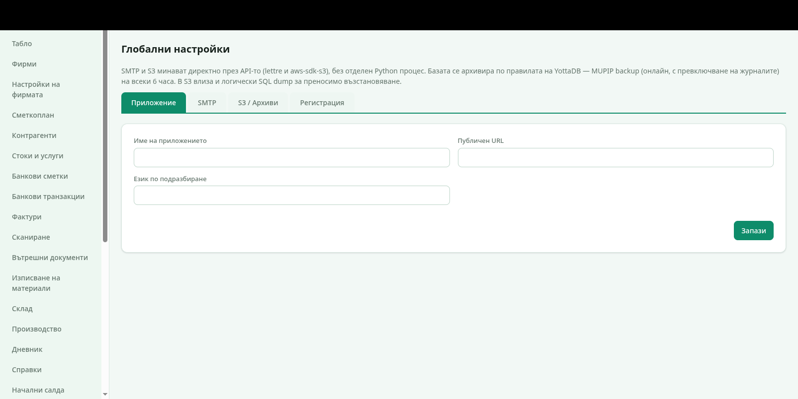
- Поща (SMTP) — сървър, порт, потребител и парола. Бутонът за тест изпраща пробно писмо, за да проверите настройките. Пощата се ползва за забравена парола и регистрационни писма;
- Архив в облак (S3) — адрес, ключ и кофа. Бутоните тестват връзката, показват наличните архиви и качват нов;
- Регистрация — включва/изключва публичната регистрация на нови фирми;
- Адрес на програмата (app.url) — адресът, който се ползва в писмата с връзки;
- База данни — проверка на интегритета с бутон „Провери сега": връзката с YottaDB/Octo, основните таблици, редовете без документ и балансът на счетоводните статии (дебит = кредит). Резултатът показва ✓ или ✗ за всяка проверка и броя редове по таблиците.
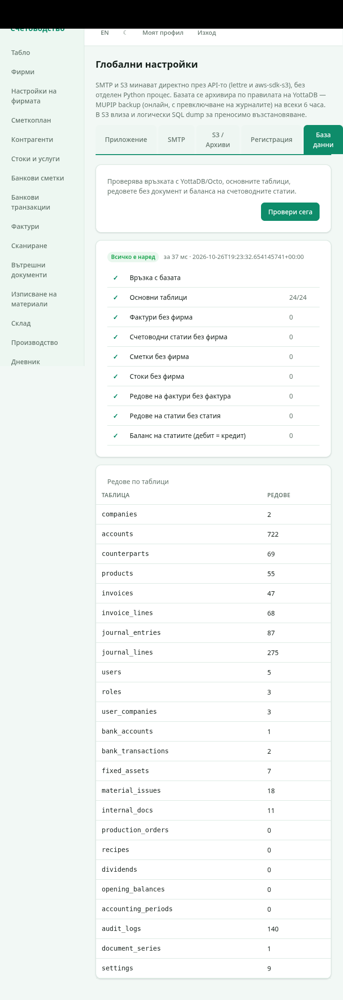
Архивиране
Архивирането работи на две нива:
- Автоматично локално — базата YottaDB се архивира по собствената ѝ система (MUPIP BACKUP) на всеки 6 часа. Пазят се последните 8 архива; по-старите се изтриват сами.
- В облак (S3) — от „Глобални настройки" бутонът за бекъп качва най-новия локален архив и SQL дъмп на данните в конфигурираната S3 кофа. Списъкът в администраторския екран показва качените архиви, от където могат и да се изтрият.
За пълна защита дръжте поне един архив извън машината — S3 кофата или изтеглен файл.
Това е краят на потребителската документация. Върнете се към съдържанието.
Потребителска документация
Това е ръководството за работа с ytbuch — счетоводната програма от серия Baraba. То описва екраните и действията от гледна точка на потребителя: счетоводител, управител или офис администратор.
Програмата работи изцяло на български (и на английски — превключва се от горния десен ъгъл), води счетоводство в евро, издава фактури по българското законодателство и подава SAF-T файлове.
Снимките в ръководството са от демо инсталацията (фирми YT ООД и ОЕГ ЕООД). Данните на снимките са примерни — вашите екрани ще показват вашите фирми и документи.
Съдържание
| Глава | Какво съдържа |
|---|---|
| 1. Запознаване | Вход, интерфейс, табло, фирми, език и тема |
| 2. Фирма и сметкоплан | Настройки на фирмата, обекти, собственици, номерация, сметкоплан |
| 3. Фактури | Нов документ, публикуване, печат, UBL, сторно, сканиране, чл. 117 и митническа декларация |
| 4. Стоки и склад | Стоки с КН8 класификация, контрагенти, вътрешни документи, изписване на материали, склад, производство |
| 5. Счетоводство | Дневник, справки, начални салда, периоди, ДДС, банки (CSV, MT940, XML), ДМА, дивиденти, курсове |
| 6. SAF-T | Експорт за НАП, номенклатури, кореспонденции |
| 7. Потребители и администриране | Потребители, роли и права, одитна следа, профил, 2FA, глобални настройки, архивиране |
Как да започнете
- Отворете адреса на програмата (локално:
http://127.0.0.1:3020). - Влезте с потребителско име и парола — вижте Запознаване.
- Ако тепърва започвате: създайте фирма, попълнете настройките ѝ и заредете сметкоплана от НАП — стъпките са в Фирма и сметкоплан.
Основни правила в програмата
- Базова валута е евро (EUR). Фактури могат да се издават и в друга валута, но счетоводството се води в евро по курс от ЕЦБ.
- Чернова и публикуван документ. Документът се създава като чернова — може да се редактира и трие. След „Публикуване" той прави счетоводен запис и вече не се променя; грешка се коригира с нов документ (сторно или кредитно известно).
- Затворен период спира поста. Когато месецът е затворен в „Периоди", не могат да се публикуват документи с дата в него. Така приключеният месец остава непокътнат.
- Данните са по фирма. Всеки екран показва данните на активната фирма от горната лента. Смяната на фирмата превключва целия списък.
Съвети
- Търсене има почти на всеки списък — по номер, име или ЕИК.
- Списъците странират по 50 реда — бутоните за страници са под таблицата, а търсачката обхваща всички редове.
- Бутонът „Покажи" презентира справката на екрана; PDF / XLSX / ODS изтеглят същите данни като файл.
- Ако екранът показва стари данни след промяна, презаредете страницата (F5).